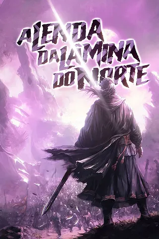

A Lenda da Lâmina do Norte
Acompanhamos Jin Mu-Won, um jovem que vê sua influente seita ser destruída por traições e conspirações de aliados gananciosos. Após a morte forçada de seu pai, ele treina secretamente artes marciais ancestrais e retorna ao Murim determinado a vingar sua família e destruir as forças corruptas.